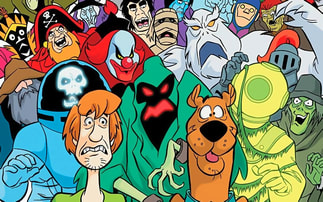

The Characters of Scooby Doo
At the heart of Scooby-Doo is Mystery Inc., a team of amateur sleuths who travel in their iconic van, the Mystery Machine. Scooby-Doo, the lovable Great Dane, is the star of the show, often accidentally solving mysteries while seeking his next snack. His best friend, Shaggy, shares his love of food and fear of ghosts, creating some of the funniest moments in the series. The rest of the gang includes Fred, the brave and resourceful leader; Daphne, the stylish yet determined investigator; and Velma, the brilliant problem solver whose famous line, “My glasses! I can’t see without my glasses!” is as iconic as the show itself. Together, the team’s diverse strengths make them an unstoppable force against mystery and mayhem.
Memorable Villains
The Scooby-Doo franchise has introduced countless villains, many of whom have become as famous as the heroes. Classic adversaries like the Creeper, the Black Knight, and Captain Cutler’s Ghost are instantly recognizable, with their eerie designs and memorable schemes. While the villains are often unmasked as ordinary people with ulterior motives, their spooky costumes and clever traps add an element of suspense to each episode. The reveal at the end of every mystery remains one of the most satisfying aspects of the show.
